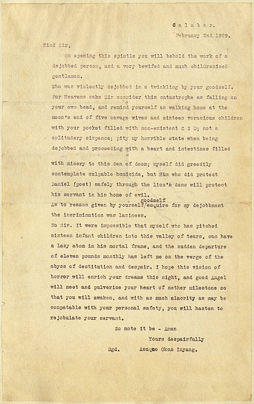

Wednesday, October the 26th, 2011
back to: title, date or indexes
Many thanks to Peter Christian for alerting me to this magnificent letter.

A full transcript can be read at Letters Of Note, which looks like a blog well worth keeping an eye on.